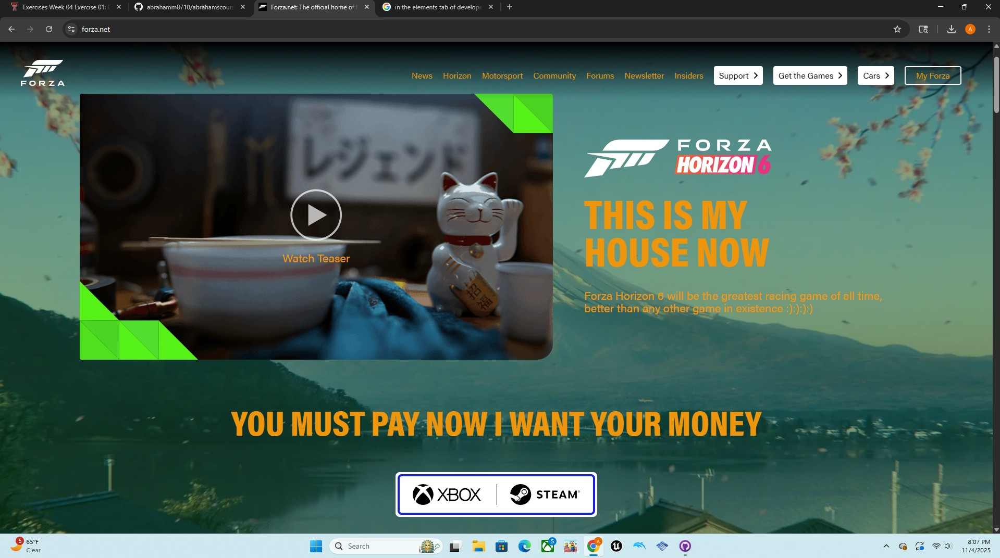

I used Dev Tools to "Vandalism" the Forza game website
I used browser developer tools to temporarily "vandalize" the Forza Horizon game website. I altered some things such as the font, font color, background color and more.

What I "Vandalized" in the Forza Horizon
The changes I made to the Forza Horizon Game Website described below Those changes are:
- What text did you edit? I edited the text where it says "This is my House Now" it used to say "Welcome to Horizon Japan". I also changed the text where it says "Forza Horizon 6 will be the greatest racing game of all time, better than any other game in existence". It used to say "get ready to discover the breathtaking landscapes of Japan and become a racing Legend at the Horizon Festival". Forza Horizon 6 is coming 2026 first on Xbox X|S and PC, and post-launch on PS5! Another text I changed was where it says "You must pay now I want your money". It orignally said "Wishlist Now".
- What CSS properties did you modify? I was able to modify the text color of the text I changed,described above. I changed the text color to orange and the font size to the bottom text of the screenshot. I also changed the background color of the website to a light green, the original color was a light blue I believe.
- What made your edits interesting or amusing? I found it interesting because changing the text and color made it funny, because it showed how the text color orange on the text I changed doesn't belong on the site. I thought that was funny to me, it shows how you can have fun altering the website.
- Did you understand why some changes worked and some didn't? I think I did understand, it didn't allow me to change the images that were on the website, I am assuming I had to insert a different image on there to replace the current image.
- I chose to change them because I found it very funny and entertaining to change. I wanted to have fun on this assignment. I wanted to see what it would like from my perspective.
- Were you able to understand how the HTML and CSS worked together to make the changes you made? I better understand it now Both HTML and CSS both help each to create the elements of a webpage, both are needed to make this work
- Do you think you have a better sense of how dev tools can be used while crafting your own webpages? I believe I got a better understanding of how dev tools can be used, there is still a lot for me to still learn, but I have more knowledge now than I did before doing this assignment.